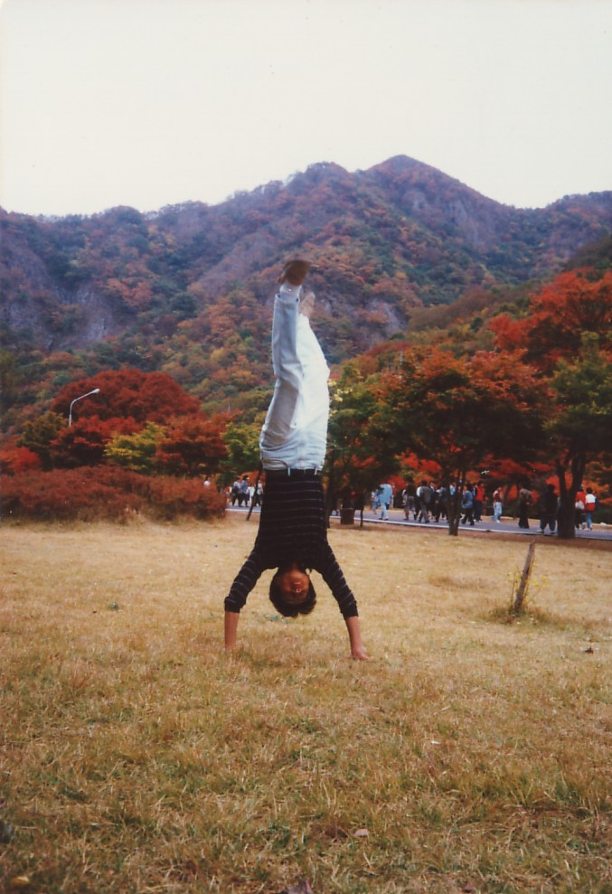

재관의 기본 정보

- 생년월일 : 1970년 1월 5일(음력)
- 출생지 : 전라남도 신안군 지도읍
- 학력 : 목포동초 - 목포덕인중 - 목포홍일고 - 원광대학교 건축학과 졸업
- 직업 : 기술직 공무원(시설직렬(건축직), 2005년 합<<, 경력직 7급 채용, 現 전라남도담양교육지원청 시설팀장)
- 가족관계 : 어머니, 형 3명, 배우자(김은진), 자녀(김민주, 김민석)
- 취미 : 집 앞 슈퍼 다녀오기, 배스킨라빈스 버라이어티팩 사오기, 왓챠/유튜브로 영화/드라마 몰아보기, 핸드폰으로 코인 관련 영상 보다가 그대로 잠들기(주로 김민주가 영상을 꺼줌)
- 자격증 취득 및 성과 : 운전면허(1종 보통), 건축사 자격증, 반건조 오징어 맛있게 굽기 1급 자격증 보유, 테슬라 차량 구매 경험자, (자)타칭 '투자의 신'
- 휴대폰 기종 : Samsung Note 10(딸이 애플워치로 갈아타며 남겨진 Galaxy Watch 3와 Galaxy Buds Live 함께 보유 중)
- 특이 사항 : 피부가 매우 건조함, 조금씩 사라지는 머리숱(...), 미용사가 테슬라 차주인 남악의 한 미용실 애용, 콜라 등 탄산음료와 오징어 애호가, 과자 중에서는 바나나킥과 웨하스를 선호